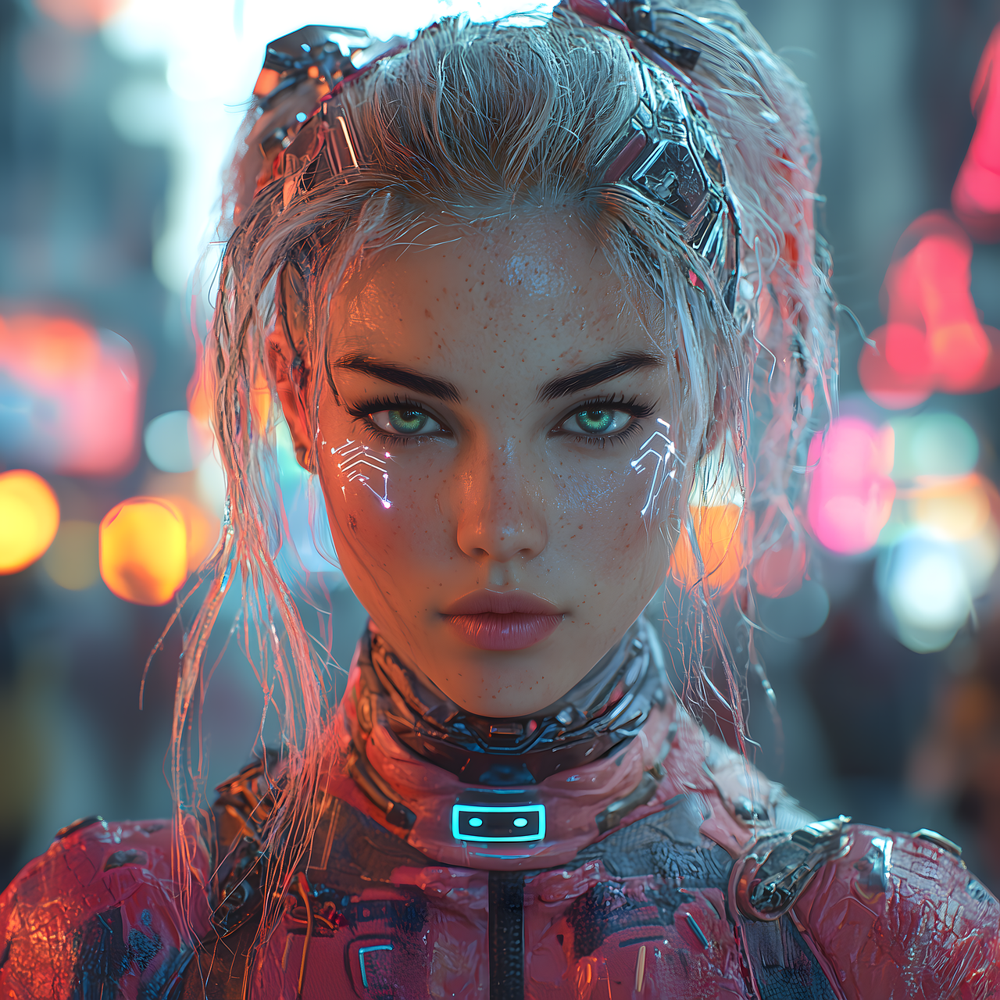

Porque ter um web site ?
Na era digital em que vivemos, ter um site é essencial para qualquer negócio, profissional ou até mesmo para quem deseja se destacar na internet. Um website serve como a base online, onde as pessoas podem conhecer melhor quem você é, o que você oferece e como entrar em contato. Além disso, um site é uma plataforma acessível 24 horas por dia, 7 dias por semana, permitindo que o público se envolva com seu conteúdo ou adquira produtos/serviços a qualquer momento.
Inovação
A inovação transformou a maneira como nos conectamos e fazemos negócios. Ter um website não é mais apenas uma escolha, mas uma necessidade para quem deseja estar na vanguarda da transformação digital. Um site bem projetado pode ser uma ferramenta inovadora, oferecendo não apenas informações estáticas, mas uma experiência dinâmica e interativa para os visitantes. Por meio de design moderno, tecnologias avançadas e recursos como inteligência artificial e personalização, um site pode se tornar um ponto de inovação que conecta marcas e consumidores de maneira única.